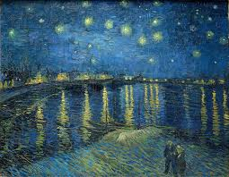

Virtual Art Gallery
Welcome to my Virtual Art Gallery. Here you will find some unique artworks that I admire. Old collections are removed.
1. Starry Night
This painting by Vincent van Gogh is one of the most recognized pieces of art in the world.
It represents his view from the asylum room window.

Learn more about Starry Night
2. Mona Lisa
Mona Lisa, painted by Leonardo da Vinci, is famous for her mysterious smile.

Visit Louvre to see Mona Lisa
3. The Persistence of Memory
A masterpiece by Salvador Dalí, showcasing melting clocks and surrealism.

More about this painting
4. The Girl with Pearl

More about this painting
Simple step-by-step ordered lists: one for making art, another for setting gallery rules.
Steps to Create Your Own Art
- Find inspiration — collect ideas, references, emotions, or themes you want to explore.
- Choose your medium — decide between painting, drawing, digital, sculpture, collage, etc.
- Gather materials — assemble paints, brushes, canvas, paper, tablet, modeling clay, or other tools.
- Plan the composition — sketch thumbnails, decide on focal points, color palette, and layout.
- Start a rough draft — create a loose version to establish proportions, perspective, and overall feel.
- Build layers & refine — develop details, textures, and color relationships gradually.
- Step back & evaluate — view from a distance, ask for feedback, and make adjustments.
- Finalize — add finishing touches, sign the work, and prepare it for display or sale.
- Document — photograph or scan your artwork, note title, medium, dimensions, and year.
- Share or preserve — post online, enter exhibitions, or frame and store the piece safely.
Materials Used in Art
- Oil Paints
- Charcoal
- Canvas
- Digital Tablet
- Clay Sculpting Tools
A compact table comparing selected artworks with medium and year details.
| Artwork |
Artist |
Year |
Medium |
Dimensions / Location |
| The Starry Night |
Vincent van Gogh |
1889 |
Oil on canvas |
73.7 × 92.1 cm / Museum of Modern Art, New York |
| Mona Lisa |
Leonardo da Vinci |
c. 1503–1506 |
Oil on poplar panel |
77 × 53 cm / Louvre, Paris |
| The Persistence of Memory |
Salvador Dalí |
1931 |
Oil on canvas |
24 × 33 cm / Museum of Modern Art, New York |
| Girl with a Pearl Earring |
Johannes Vermeer |
c. 1665 |
Oil on canvas |
44.5 × 39 cm / Mauritshuis, The Hague |
| Guernica |
Pablo Picasso |
1937 |
Oil on canvas (mural-sized) |
349 × 776 cm / Museo Reina Sofía, Madrid |